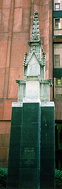
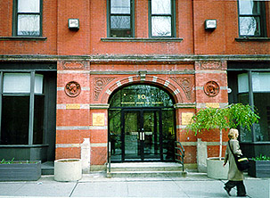
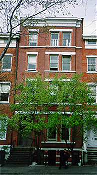
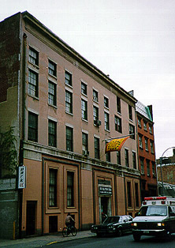
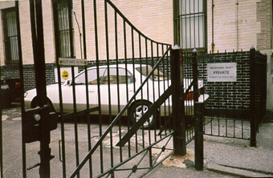
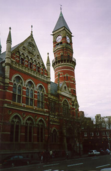
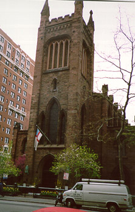
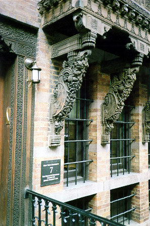
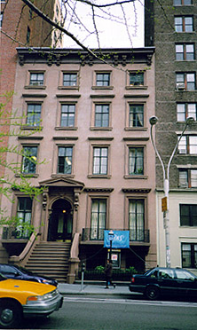

by Matthew Postal
|
Painters, critics, and collectors walked these streets - New Yorkers who certainly inspired William Gerdts and his career studying the history of art in the United States. Whereas London has Bloomsbury and Paris has Montmartre, New York has the Village, the arguable center of 19th and early 20th century American art, a single square mile where the likes of Winslow Homer, Frederick Church and Edward Hopper lived, kept company, and practiced their craft. Even for recent arrivals, it isn't hard to sense the passage of time - white-brick apartment towers, loud commercial storefronts, and the growth of New York University have had an enormous impact on one’s experience in this once-bohemian enclave. Nonetheless, the Village has succeeded in retaining a great deal of its historical character, including a remarkable number of buildings associated with the rise of American art. This walk, which takes approximately 90 minutes to complete, will emphasize one aspect of this area’s creative past, focusing on the period from the Civil War to the rise of modernism. STARTING PLACE: Washington Square East (between Washington Square South and West 3rd Street) Founders Monument  Standing in the shadows of the Elmer Bobst library, this Gothic finial was placed here to remind us of New York University’s beginnings. Established in 1831 by the diplomat and banker Albert Gallatin, who lived at 57 Bleecker Street, the university's first home was designed by Andrew Jackson Davis, one of the leading architects of his era. Sited on the east side of Washington Square, between Washington and Waverly Place, the school's original building (demolished in 1890) was one of the first examples of the English Collegiate Gothic style in this country, reminiscent of Oxford and Cambridge.Over the next three decades the building would develop a remarkable list of tenants. Not only would professors and students work here, but following the financial crash of 1837 rooms were leased out, attracting both architects and painters. In effect, it became the city’s first studio building, home to a who’s who of mid-nineteenth century New Yorkers, including the building’s architect and Richard Morris Hunt, the first American trained at the Ecole des Beaux-Arts. Among these tenants, the painter Winslow Homer is perhaps the best-known. Two years after his arrival in New York in 1859, at the invitation of the painter Eastman Johnson (who lived here as well), Homer leased a small room with a single window and roof access in the building’s tower. He resided here for nearly ten years, studying painting and print-making and working as an illustrator for Harper’s Weekly.
WALK NORTH along the east side of the park, ONE-HALF BLOCK The Benedick 80 Washington Square East (between Washington Square South and Washington Place) Named after Benedick, the confirmed bachelor in Shakespeare’s Much Ado about Nothing, this six-story red brick structure was designed by the architects McKim, Mead & Bigelow. Several well-known American artists rented rooms here including the architect William Mead (of McKim, Mead & Bigelow), Winslow Homer, Albert Ryder and John La Farge, who probably selected this building for its proximity to his recently opened stained-glass factory on West 4th Street, just around the corner. During the late 1880s, a group known as the “Sewer Club” also rented space in the Benedick. Though some have speculated that their activities were often sexual in nature, there is little documented evidence other than the fact that the notorious clubman and womanizer Stanford White was one of the group’s founders. Today, the former apartment building functions as an art gallery and dormitory for the NYU community. WALK ONE BLOCK NORTH, turn left at Washington Square North Home of Edward and Jo Hopper, 3 Washington Square North Perhaps no building in New York is more closely associated with a single artist that this 1830s row house. From 1913 till his death in May 1967, the Hoppers lived in a studio on the top floor. Chosen for its low rent and the artist’s belief that his hero, the Philadelphia artist, Thomas Eakins had painted here, Hopper and his wife leased rooms having neither heat nor private bath. They decorated their rooms simply, with pieces of early American furniture. Hopper divided his time between New York and Provincetown. As the years passed and his reputation grew, he moved to a larger, but still bathroom-less, space in the building. He exhibited his work at Edith Halpert’s Downtwown Gallery on 13th Street, as well as at the Whitney Museum of American Art and at the Museum of Modern Art. In his later years, when Hopper’s fame was at its height, NYU became the building’s landlord, raising the artist’s rent and threatening eviction. Many Village residents came to the couple’s defense, including the Ashcan school painter, John Sloan.
WALK WEST to the intersection of FIFTH AVENUE Washington Square Arch During the last quarter of the nineteenth century considerable change came to Washington Square. In an attempt to beautify and stabilize the neighborhood, several local families, including William Rhinelander who lived at No. 17 North, joined together to finance the construction of a temporary wood and plaster triumphal arch over Fifth Avenue commemorating the centennial of George Washington’s inauguration. Pleased with the results, a committee was quickly formed to erect a permanent version within the park, which was dedicated in May 1895. Designed by Stanford White, the Washington Arch is one of first expressions of the City Beautiful movement in New York. Costing $133,500, the white marble structure features reliefs by Frederick MacMonnies, and includes two colossal portraits: “Washington at War” by Henry MacNeil, and “Washington in Peace” by Alexander Stirling Calder, the father of the modern sculptor Alexander Calder. Legend has it that on snowy January evening in 1917, a party of six climbed the 110 iron steps in the arch’s west pier to throw themselves a roof-top party and declare Greenwich Village “a free and independent republic.” Although Sloan and Duchamp are the best-known celebrants, the party was, in fact, organized by Gertrude Drick, a relocated Texan. They were joined by the actors Forrest Mann, Betty Turner, and Charles Ellis of the Provincetown Playhouse. For some, this party might be considered a last gasp, or at the very least a harbinger of things to come, trumpeting the existence of an artistic community that, even then, was somewhat under siege. By the 1910s tourists were already invading the Village, buying cheap paperback guides, and frequenting the various restaurants and tea shops associated with this bohemian enclave, including Bruno’s Garret on Washington Square South, promoted as a “First Aid Station for Struggling Genius,” and Polly Hollday’s restaurant, known for its anarchist owner and radical clientele.
WALK NORTH along Fifth Avenue, turn LEFT on 8TH STREET Whitney Museum of American Art/New York Studio School, 8-14 West 8th Street It was not by chance that Gertrude Vanderbilt Whitney established a museum devoted to American art on West 8th Street. For more than three decades, the granddaughter of the Commodore Cornelius Vanderbilt had called the Village home, working as a sculptor on MacDougal Alley and socializing in a circle of Village artists, including several members of the Ashcan school. Whitney, during these years, assembled an unrivalled collection of American art, especially works by Hopper, Sloan, and Prendergast. These paintings became the core of the collection – the very collection (plus $5 million) whose gift the Metropolitan Museum of Art foolishly refused in 1929, prompting her to open a museum of her very own. Four townhouses were merged and rebuilt, designed by the architects Noel & Miller in a style that can be best described as patriotic deco. The museum opened in November 1931 with Juliana Force as its director. Above the door is a metal relief of an eagle by Karl Free, a painter and curator at the museum. Inside, the galleries were designed by Bruce Butterfield and some of the original stenciling has in recent years been restored. In 1954 the museum relocated to 22 West 54th Street. The New York Studio School is the building’s current owner. Founded in 1964, its distinguished faculty has included Philip Guston, Alex Katz, Meyer Shapiro, and Leo Steinberg. Ask the desk attendant to take a peek at the Whitney Studio at the rear of the second floor and its remarkable swirling fireplace designed by Robert Chandler.
WALK WEST, take a left on MacDougal Street MacDougal Alley Tucked behind the mansions of Washington Square North is a dead end mews dating from the 1830s. These former stables, built for horses, carriages, and coachmen, were built to serve the wealthy families that lived closeby. By 1907, however, artists (and automobiles) were transforming the Village and these stables became the studios of such sculptors as Henry Kirke Bush-Brown, Daniel Chester French, and Gertrude Vanderbilt Whitney, whose space at #19 was later absorbed into her new museum of American art. So many residents on the block were sculptors, tourists called it “Art Alley de Luxe,” while residents spoke of officially renaming it “Donatello” Court. In later years, Gaston Lachaise lived here, as well as the Filipino muralist Alfonso Ossorio, with whom Jackson Pollock and Lee Krasner often stayed during 1949 and 1950.
Return to 8th Street, WALK WEST to Sixth Avenue, then TWO BLOCKS NORTH to the corner of 10th Street. Jefferson Market Branch of the New York Public Library Designed by Withers & Vaux in 1876, this turreted Victorian Gothic structure was originally built as the Third Judicial District Courthouse. Imaginatively adapted for reuse by the architect Giorgio Cavagleri, it features a number of notable decorative elements, including moralistic inscriptions, marvelous terra cotta work on the exterior, and Pre-Raphaelite style stained glass in shades of lavender and sky blue in building’s former court and the dramatic circular stair tower.
WALK EAST on 10th Street Site of the Tenth Street Studio Building, 51 West 10th Street Designed by Richard Morris Hunt in 1857, the neo-Grec style Tenth Street Studio Building stood on this site until 1956. Financed by James Boorman Johnston, it was first building of its kind. In its heyday, which lasted for most of the second half of the nineteenth century, it attracted such luminaries as Winslow Homer, John La Farge, Emanuel Leutze, William Merritt Chase, and Albert Bierstadt. In twenty-five studios, spread over three floors and surrounding a central glazed court, members of the Hudson River School, as well as their successors, lived, worked, and promoted their careers. In 1859 the painter Frederic Edwin Church exhibited the “Heart of the Andes,” a 10-foot wide panoramic landscape in the building’s communal gallery. Twelve thousand visitors paid twenty-five cents each to view the monumental canvas.
Walk east to the corner of 10th Street and Fifth Avenue Church of the Ascension By the mid-1880s the Church of the Ascension (Richard Upjohn, 1840) was almost a half-century old. In an effort to spruce up the Gothic Revival building’s modest interiors, the congregation decided to remodel the sanctuary. After removing the north and south galleries, Stanford White supervised the redecoration, commissioning a new pulpit designed by his partner Charles F. McKim, as well a series of spectacular stained glass memorial windows – four by John LaFarge, two by D. Maitland Armstrong, as well one each by J. Alden Weir and Louis Comfort Tiffany. Above the altar is the encaustic painting “The Ascension of Christ” by La Farge. Completed in 1888, this monumental work ranks among the greatest murals produced by an American artist. Note: This church is frequently closed. Call ahead for current hours.
Walk about A THIRD OF A BLOCK EAST on 10th Street Lockwood deForest House, 7 East 10th Street This well-preserved facade with elaborate wood detailing was designed by Lockwood De Forest, one of the founding members of the Associated Artists, the decorative arts aetelier he co-founded with Louis Comfort Tiffany and Candace Wheeler in 1879. Inspired by his wedding trip to India, De Forest decorated the facade with low relief teak carvings produced in a Ahmedabad factory, particularly around the building’s main entry and the projecting oriel on the second floor. Widely admired for its decoration and furnishings, in 1900 a writer for House Beautiful called it the “most beautiful Indian House in America.” Purchased by New York University in the early 1990s, the building is currently occupied by the Bronfman Center for Jewish Student Life. RETURN to Fifth Avenue, walk one and a half blocks NORTH Salamagundi Club, 47 Fifth Avenue There was a time when numerous artists gathered in Greenwich Village, forming both social and professional organizations. Today, only one club survives, the Salamagundi, located in a handsome Italianate brownstone built in 1853, complete with high stoop, that was once home to the president of the Pennsylvania Coal Company, Irad Hawley. Suggesting a “stew” or “salad” of various ingredients, the Salamagundi Club has since 1871 attracted a long list of renown members, including Childe Hassam, William Merritt Chase, John La Farge, Augustus St. Gaudens, Louis Comfort Tiffany, as well as Stanford White and John Philip Souza. The club purchased the mansion in 1917 and continues to sponsor public exhibitions and lectures. While the interior spaces are private and off-limits, the main exhibition gallery at the rear is open to the public on most days. |
|